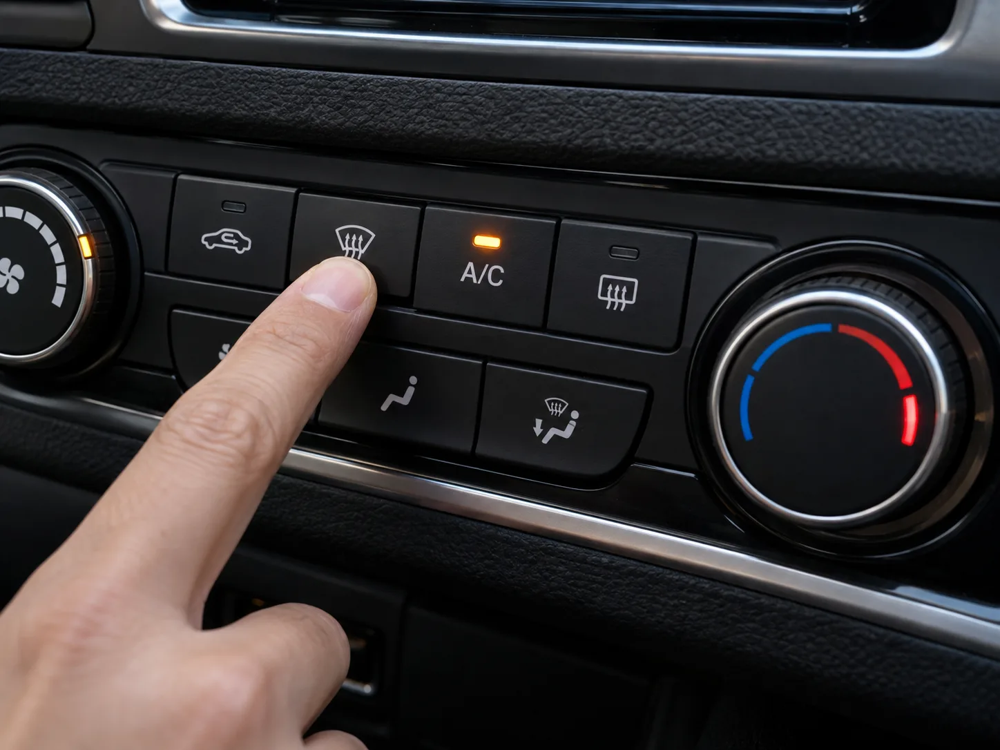
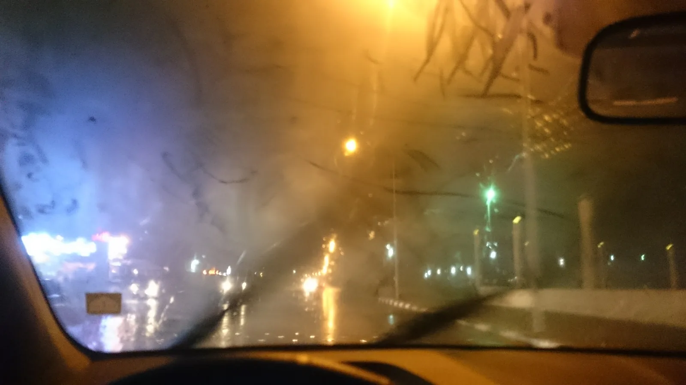
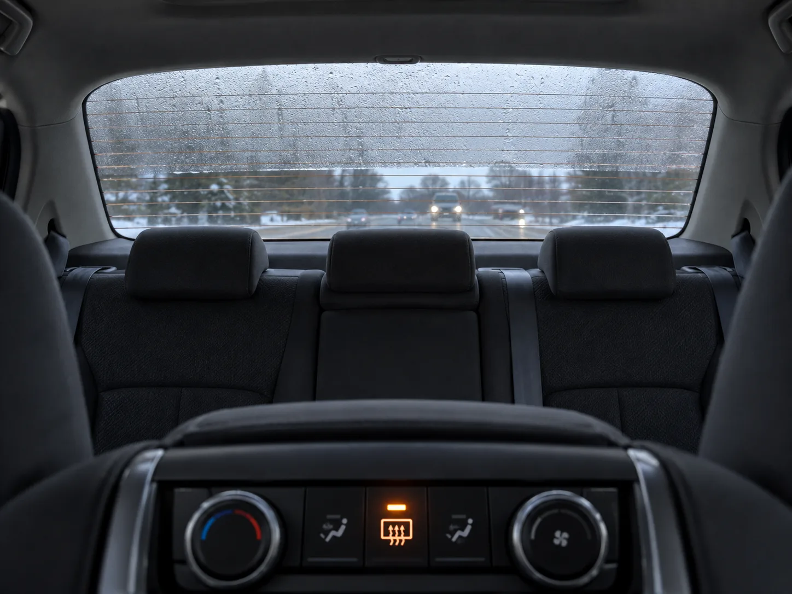
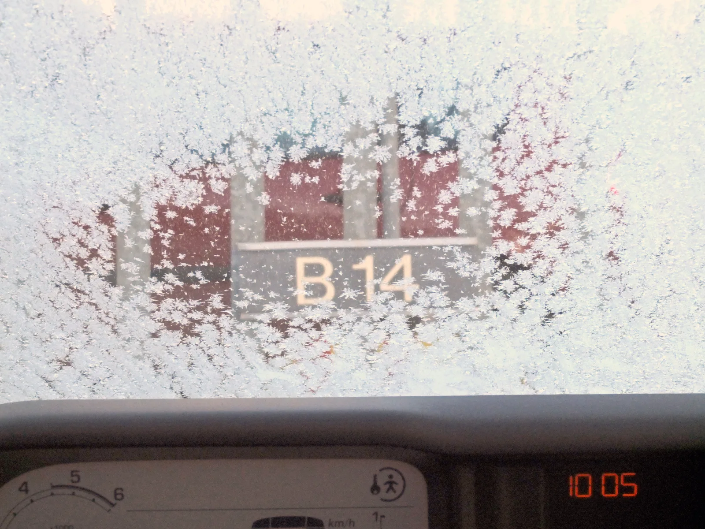

▲ 김서림 제거의 핵심은 히터가 아니라 A/C 버튼이다 ⓒ CarPrism (AI 생성 이미지)
비 오는 아침이나 일교차가 큰 환절기, 출발 직전 앞유리가 뿌옇게 흐려지는 경험은 누구나 한 번쯤 겪는다. 이때 반사적으로 히터를 세게 트는 사람이 많지만, 사실 그것만으로는 김서림이 잘 걷히지 않을 때가 많다.
김서림을 가장 빨리 없애는 열쇠는 히터가 아니라 A/C(에어컨) 버튼에 있다. 원리를 알면 앞으로는 출근길에 몇 분씩 허비하지 않아도 된다.
1. 김서림은 왜 생길까 — 온도차와 습도의 합작품
김서림은 유리 표면 온도가 실내 공기의 이슬점보다 낮을 때 생기는 결로 현상이다. 비 오는 날이나 환절기에는 탑승자의 호흡, 젖은 옷과 신발, 바닥 매트의 수분이 더해지면서 차량 실내 습도가 빠르게 올라간다.
| 조건 | 내용 |
|---|---|
| 온도차 | 외기 온도가 낮아 유리 표면이 0~5℃까지 떨어지고, 실내 공기가 20℃ 이상이면 15℃ 이상 온도차 발생 시 급속 결로 |
| 습도 | 비 오는 날 젖은 옷·우산, 탑승자 호흡, 히터로 데워진 바닥 매트 수분 등으로 실내 습도 급상승 |
| 환기 부족 | 창문을 닫고 내기 순환 모드로 주행하면 습한 공기가 실내에 계속 머물러 김서림이 반복됨 |
| 탑승 인원 | 인원이 많을수록 호흡으로 배출되는 수증기량이 늘어 김서림 속도가 빨라짐 |

▲ 비 오는 밤 김서림은 시야를 크게 가려 사고 위험을 높인다 ⓒ AhmadElq, Wikimedia Commons (CC BY-SA 4.0)
2. 에어컨 vs 히터, 뭐가 더 빨리 없애나 — 정답은 '둘 다'
많은 운전자가 오해하는 부분이 바로 이 지점이다. 히터는 공기를 따뜻하게만 만들 뿐, 공기 중 수분을 없애주지는 않는다. 반면 A/C(에어컨) 시스템은 공기가 차가운 증발기(에바포레이터) 코일을 통과하면서 수분이 응결돼 제거되는 제습 원리로 작동한다.
📍 가장 빠른 조합 — 히터 + A/C + 외기 순환
겨울철에도 히터로 따뜻한 바람을 내보내면서 동시에 A/C 버튼을 눌러 건조한 공기를 만드는 것이 핵심이다. 공기가 에바포레이터를 지나며 습기를 뺏기고, 그 건조해진 공기를 히터가 다시 데워 유리에 뿌리면 따뜻하면서도 습기가 없는 공기가 유리 표면의 김을 훨씬 빠르게 증발시킨다. 여기에 외기 순환 모드까지 함께 쓰면, 실내에 머물던 습한 공기 대신 상대적으로 건조한 바깥 공기가 들어와 효과가 배가된다.
✅ 앞유리 김서림 제거 4단계
· 1단계 — 앞유리 김서림 제거(Front Defrost) 버튼을 누른다
· 2단계 — A/C 버튼을 함께 켠다(꺼져 있다면 반드시 활성화)
· 3단계 — 온도 다이얼을 따뜻한 쪽으로 올린다 (차가운 바람이 아니라 따뜻하고 건조한 바람이 목적)
· 4단계 — 외기 순환 모드로 전환하고, 송풍 세기를 최대로 올린다
차종별 김서림 제거 버튼 위치와 자동 작동 조건은 제조사 매뉴얼에서 확인할 수 있다. Motorist Care 원문 바로가기
3. 뒷유리는 다르다 — 반드시 열선(REAR) 버튼을 눌러야 하는 이유
앞유리는 히터·에어컨 바람이 직접 닿지만, 뒷유리는 공조기 통로가 짧고 바람이 잘 닿지 않는 구조다. 그래서 대부분의 차량은 뒷유리에만 가느다란 열선(전기 발열선)을 심어두고, 별도의 REAR 버튼으로 작동시키도록 설계돼 있다.

▲ 뒷유리 가로줄 열선이 발열하며 서서히 김과 습기를 걷어낸다 ⓒ CarPrism (AI 생성 이미지)
📍 앞유리에도 열선이 숨어 있다 — 와이퍼 디아이서
일부 차량은 앞유리 하단, 와이퍼가 닿는 부분 테두리에 와이퍼 디아이서(wiper deicer)라는 열선을 내장한다. 유리 테두리부터 열을 가해 서서히 중심까지 온도를 전달하는 방식으로, 겨울철 와이퍼가 유리에 얼어붙는 것을 막아준다. 단, 앞유리 전체의 김서림 제거는 여전히 공조기(A/C+히터) 바람이 주된 역할을 한다.
✅ 뒷유리 김서림 제거 요령
· 시동을 걸자마자 REAR(뒷유리 열선) 버튼부터 누른다 — 열선이 데워지는 데 시간이 걸리므로 미리 켜두는 것이 유리
· 사이드미러에도 열선이 있는 차량은 함께 작동시키면 후방 시야 확보에 도움
· 열선은 전력 소모가 있으므로 김이 완전히 걷히면 꺼주는 것이 배터리·연비에 유리
4. 겨울철 성에 제거 — 뜨거운 물은 절대 금물
기온이 영하로 떨어지는 겨울 아침, 앞유리에 하얗게 낀 성에는 김서림과는 다른 문제다. 서리는 수증기가 차가운 유리 표면에서 바로 얼어붙은 것으로, 단순히 공조기 바람만으로는 시간이 오래 걸린다.
📍 뜨거운 물을 부으면 안 되는 이유
급하다고 뜨거운 물을 유리에 부으면 극심한 온도차로 유리에 미세 균열이 생기거나 심한 경우 깨질 수 있다. 게다가 부은 물 중 미처 녹지 않은 부분이 다시 얼어붙으면 더 단단한 얼음층이 만들어져 오히려 제거하기 어려워진다.
| 방법 | 평가 |
|---|---|
| 전용 스크래퍼 | 가장 안전 — 부드러운 플라스틱 재질 제품 사용, 신용카드·금속 도구는 흠집 위험으로 금지 |
| 겨울용 워셔액 | 알코올 성분이 어는점을 낮춰 성에를 녹이고 재결빙 방지 — 뿌린 뒤 와이퍼로 정리 |
| 시동 후 공조기 예열 | 안전하지만 시간이 오래 걸림 — 스크래퍼·워셔액과 병행이 효율적 |
| 뜨거운 물 | ❌ 절대 금지 — 유리 파손, 재결빙으로 인한 이중고 위험 |
✅ 겨울철 성에 대비 습관
· 동절기용(저온용) 워셔액으로 미리 교체 — 일반 워셔액은 영하권에서 얼어 분사가 안 될 수 있음
· 전날 밤 앞유리에 덮개(커버)를 씌워두면 아침 성에 제거 시간을 크게 줄일 수 있음
· 스크래퍼는 차량에 상시 비치해두는 것이 좋음

▲ 두껍게 낀 성에는 스크래퍼와 워셔액을 병행해야 안전하고 빠르게 제거된다 ⓒ Kotivalo, Wikimedia Commons (CC BY-SA 3.0)
5. 시야 미확보 운전, 왜 위험하고 어떤 법적 책임이 따르나
김서림이나 성에를 제대로 제거하지 않은 채 출발하는 것은 단순한 불편이 아니라 사고 위험을 직접 키우는 행위다. 전방·측방 시야가 가려진 상태에서는 보행자, 신호, 다른 차량의 돌발 상황에 대응할 시간이 절대적으로 부족해진다.
📍 도로교통법상 안전운전 의무
도로교통법 제48조(안전운전 및 친환경 경제운전의 의무)는 모든 운전자가 조향장치·제동장치를 정확히 조작하고, 도로 상황과 차의 구조·성능에 따라 다른 사람에게 위험이나 장해를 주는 방법으로 운전해서는 안 된다고 규정한다. 시야가 확보되지 않은 상태의 주행은 이 의무를 위반한 것으로 판단될 수 있으며, 사고 발생 시 '안전운전 의무 불이행'이 적용돼 책임이 가중될 수 있다.
도로교통법 제48조 원문과 관련 판례는 아래에서 확인할 수 있다. 도로교통법 제48조 바로가기
⚠️ 절대 이렇게 출발하지 말 것
· 손이나 옷소매로 앞유리 일부만 닦고 좁은 시야로 출발
· 뒷유리·사이드미러 김서림을 방치한 채 후진·차선 변경
· 워셔액이 없거나 얼어서 나오지 않는 상태로 겨울철 주행
· "운전하다 보면 없어지겠지"라며 시야가 가려진 채로 출발
6. 예방이 최선 — 코팅제와 실내 습기 관리
매번 출발 전 김서림과 씨름하고 싶지 않다면, 평소 습관으로 상당 부분 예방할 수 있다. 핵심은 유리 표면 관리와 실내 습도 조절 두 가지다.
✅ 김서림 예방 습관
· 실내 유리용 김서림 방지제(안티포그 코팅)를 앞유리 안쪽에 발라두면 수증기가 물방울로 맺히지 않고 얇은 막으로 퍼져 시야 방해가 줄어듦
· 외부 유리에는 발수코팅제를 따로 사용 — 내부용과 용도가 다르므로 혼용하지 말 것
· 차량용 제습제(실리카겔 등)를 실내에 비치하면 습기 누적을 줄일 수 있음
· 비 오는 날 탑승 전 우산·젖은 옷의 물기를 최대한 털어내기
· 평소 주행 시에도 가끔 외기 순환 모드로 전환해 실내 습한 공기를 환기
· 유리 내부를 마른 극세사 천으로 주기적으로 닦아 유막을 제거하면 김이 덜 맺히고 빗물도 잘 흘러내림
📍 발수코팅 후 오히려 김서림이 심해졌다면
외부 유리에 발수코팅을 과하게 하면 표면장력 변화로 외부 김서림(밤·새벽 시간대 바깥 면에 맺히는 김)이 오히려 늘었다는 사례도 있다. 이 경우는 내부 김서림과 원인이 다르므로, 내부는 공조기+A/C, 외부는 와이퍼로 대응하는 것이 현실적인 방법이다.
7. 요약
자동차 유리 김서림은 실내외 온도차와 습기가 만나 생기는 결로 현상이다. 가장 빠른 제거법은 히터만 트는 것이 아니라 앞유리 김서림 제거 버튼 + A/C 버튼 + 외기 순환을 함께 쓰는 것이다. A/C가 공기 중 습기를 제거하고, 히터가 그 건조한 공기를 데워 유리에 뿌려주는 원리를 이해하면 훨씬 빠르게 시야를 확보할 수 있다.
뒷유리는 열선(REAR) 버튼을 반드시 눌러야 하며, 겨울철 성에가 꼈을 때는 절대 뜨거운 물을 붓지 말고 전용 스크래퍼와 저온용 워셔액을 사용해야 한다. 시야가 확보되지 않은 채 출발하는 것은 도로교통법상 안전운전 의무 위반으로 이어질 수 있는 만큼, 완전히 시야를 확보한 뒤 출발하는 습관이 중요하다.
평소 안티포그 코팅, 제습제 비치, 유리 유막 제거 같은 예방 습관을 들여두면 갑작스러운 김서림·성에로 출근길 시간을 허비하는 일을 크게 줄일 수 있다.